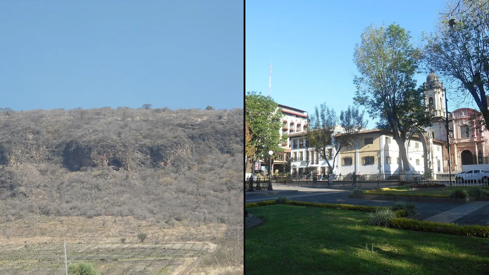

OKpolítico
OKpolíticoDetienen a Ricardo Alejandro 'N', «N» presunto responsable

ACTUALIZADO · Cae ‘El Mike’, operador de la célula Los R’s, tras una balacera en Atotonilco el Alto, Jalisco, vinculado al asesinato de Carlos Manzo, exalcalde de Uruapan.
Compartir por WhatsAppActualización 21:53 h
El 14 de noviembre de 2026, autoridades federales de la SSPC, la Defensa Nacional y la Fiscalía General de la República detuvieron a Miguel Ángel ‘N’, apodado ‘El Mike’, en Atotonilco el Alto, Jalisco. La captura se produjo tras un enfrentamiento.
El detenido es integrante de la célula Los R’s, una facción del Cártel Jalisco Nueva Generación vinculada al homicidio de Carlos Alberto Manzo Rodríguez, presidente municipal de Uruapan, Michoacán.
✉️ Recibe lo importante del día en tu correo. Suscríbete gratis →El caso de Manzo generó una ola de indignación en Uruapan. La muerte de Manzo se convirtió en símbolo de la violencia que azota a Michoacán y de la lucha del gobierno federal contra los cárteles.
Grecia Quiroz celebró la detención de ‘El Mike’, señalando que representa un avance en la investigación del asesinato de Manzo y que las autoridades continúan trabajando para desarticular la célula de Los R’s.
La operación se llevó a cabo como parte de una estrategia de prevención y disuasión del delito que ha estado en marcha en la región, y se espera que la detención permita acceder a información clave sobre la organización criminal y sus vínculos con otros crímenes en el país.
El proceso judicial contra los detenidos seguirá su curso ante la Fiscalía, mientras las autoridades federales y estatales mantienen la vigilancia sobre la zona y continúan las investigaciones sobre la cadena de mando del CJNG.
Autoridades detuvieron a Ricardo Alejandro 'N', «N», presunto responsable.
Víctimas atribuidas: 1 (Gabriel Rivas Ríos, regidor de Cuernavaca). No hay sentencia: se presume inocente mientras un juez no resuelva lo contrario. Ricardo Alejandro ‘N’ es detenido como presunto autor material del homicidio del regidor Gabriel Rivas Ríos. La Fiscalía sigue investigando la cadena de responsabilidad del ataque armado que culminó con la muerte del funcionario.
Actualizado 02:31 h (centro de México). Información en desarrollo; OKpolítico la ampliará con datos verificados.
Sigue viendo
- 📺 Detienen a Lili Campos: el esquema de 62 mdp en lavado fantasma
- 📺 La matanza de Aguas Blancas: el expediente de 1995
- 📺 DEA acusa nexos políticos-cárteles: ¿cooperación o injerencia?
- 📰 Muere Peter Hernandez, padre de Bruno Mars, a los 74 años
- 📰 Morena definirá el miércoles estrategia para renovar presidencia del INE ante falta de acuerdos
- 📰 Petro advierte sobre golpe de Estado en Colombia tras denuncias de senadores de oposición
Con información de
López-Dóriga Digital · Milenio · 24-horas · Nación321 · TV Azteca · Amexi · El Tiempo · Noticias Caracol · Vanguardia · N+ · EL PAÍS English · El Universal · Expreso · Diario Presente · La Jornada · Politico.mx